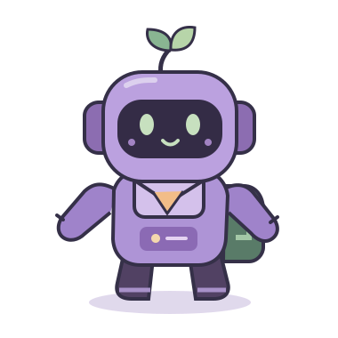

Texto
Para nombres, gustos o habilidades.
"leer mapas"LABORATORIO DE HISTORIAS · AVENTURA 01
Tu personaje tiene un nombre, una edad y algo que lo hace único. Descubrí cómo la programación guarda cada parte de su historia.
ARCHIVO DE PERSONAJE 001

"Lúa"TEXTO13NÚMEROverdaderoLÓGICOCada dato cuenta una parte de su historia.
TU MISIÓN GENERAL
Sus personajes perdieron sus fichas. Como Guardián o Guardiana de los Datos, vas a reconstruir una: elegí un dato, dale un nombre y descubrí cómo puede cambiar.
Solo necesitás curiosidad
y una hoja para tu bitácora.
ANTES DE ABRIR EL ARCHIVO
Para quién: estudiantes de 11 a 14 años que se inician en programación. Solo necesitás leer consignas, escribir y realizar sumas simples; no hace falta saber programar.
Tu equipo: vos custodiás los datos; Lúa te acompaña con ejemplos y tu docente puede ayudarte a revisar tu bitácora.
ESTADO DEL ARCHIVO
Cada misión recuperada suma 100 puntos. Una respuesta incorrecta resta 10, sin bajar de cero. Las respuestas vacías no descuentan. Repetir el mismo error no vuelve a restar y cada misión suma una sola vez. Las pistas son gratuitas.
El progreso dura mientras esta página esté abierta. Recargarla o reiniciar comienza una nueva aventura.
0puntos de exploración
Rango: aprendiz del Archivo
El Archivo espera tu primer descubrimiento. Podés empezar por cualquier misión.
Se borrarán los puntos, las respuestas y las marcas de esta aventura.
EL MAPA DE TU AVENTURA
Avanzá a tu ritmo.
Volver a intentarlo también es aprender.
MISIÓN 1 · 10 minutos aprox.
Encontraste una ficha vacía en el Archivo. Inventá un personaje y guardá sus primeros datos: nombre, edad y un gusto.
Su nombre nos ayuda a encontrarlo. Su valor es la información que contiene en ese momento.
nombre←VALOR"Lúa"Lúa tiene 13 años y le gusta dibujar mapas. Podemos representar sus datos así:
Pseudocódigo: un ejemplo para leer y pensar.
// Datos del personaje
nombre = "Lúa"
edad = 13
gusto = "dibujar mapas"Ejemplo: la variable nombre guarda el valor "Lúa". Podés inventar todos los datos; no uses información personal real.
Pensá en un cajón con etiqueta: nombre es la etiqueta y "Lúa" es lo que guardás adentro. La etiqueta y el contenido cumplen funciones distintas.
Primera variableInsignia pendiente. Tu desafío: distinguir el nombre de una variable de su valor.
Siguiente misiónMISIÓN 2 · 10 minutos aprox.
El Archivo encontró una nueva casilla: habilidad. ¿Qué sabe hacer tu personaje? El tipo de dato que elijas depende de lo que quieras contar.
Para nombres, gustos o habilidades.
"leer mapas"Para cantidades y edades.
13Para algo verdadero o falso.
verdaderoPodemos guardar qué habilidad tiene como texto y si puede explorar como un dato lógico.
habilidad = "leer mapas"
puedeExplorar = verdaderohabilidad y asignale un texto.Prestá atención: 13 es un número; "13" es texto. Las comillas cambian cómo representamos el dato en estos ejemplos.
Preguntate qué querés guardar: una descripción usa texto; una cantidad usa un número; una condición que se cumple o no usa un dato lógico.
Creador de habilidadesInsignia pendiente. Tu desafío: elegir un tipo de dato según la información.
Siguiente misiónMISIÓN 3 · 10 minutos aprox.
Hoy Lúa cumple años. Su nombre y su habilidad siguen iguales, pero su edad cambia. Para continuar su historia, hay que actualizar un valor.
edad13años
edad14años
La variable sigue llamándose edad. Reemplazamos el valor 13 por 14. En una actualización simple como esta, conserva un valor actual, no los dos a la vez.
Desafío extra: tu personaje aprende otra habilidad. ¿Qué variable actualizarías? ¿De qué tipo seguiría siendo su valor?
En el cajón que dice edad, sacás la tarjeta 13 y ponés la tarjeta 14. No necesitás cambiar la etiqueta del cajón.
Guardián del cambioInsignia pendiente. Tu desafío: explicar cómo se actualiza una variable.
Ir a mi bitácoraTU HISTORIA, EN UNA FICHA
Reuní en una hoja los datos de tu personaje y tus respuestas. Las insignias se recuperan al resolver las misiones. Marcá esta autoevaluación cuando puedas explicar cada idea.
Estas marcas son una autoevaluación de práctica: no suman puntos ni se guardan al cerrar o recargar la página.
Documento de diseño · PDFPARA CONSULTAR CUANDO QUIERAS
Las tres ideas que te acompañan en cualquier programa.
Es un lugar identificado por un nombre donde un programa puede guardar un valor. Nos permite recordar y usar información.
No. En edad = 13, edad es el nombre que identifica la variable y 13 es el valor guardado. El nombre nos permite referirnos al dato.
No. En esta aventura usamos texto, números y valores lógicos. Elegimos el tipo según la información: un nombre, una cantidad o una condición.
Podemos actualizar el valor de la variable. Por ejemplo, edad pasa de 13 a 14 después del cumpleaños. En este ejemplo su nombre se mantiene.
Leé cada misión, trabajá en tu hoja y probá las preguntas de repaso. Podés hacerlo solo o en pareja, sin reloj obligatorio. Compartí tu ficha con tu docente y explicá tus decisiones.